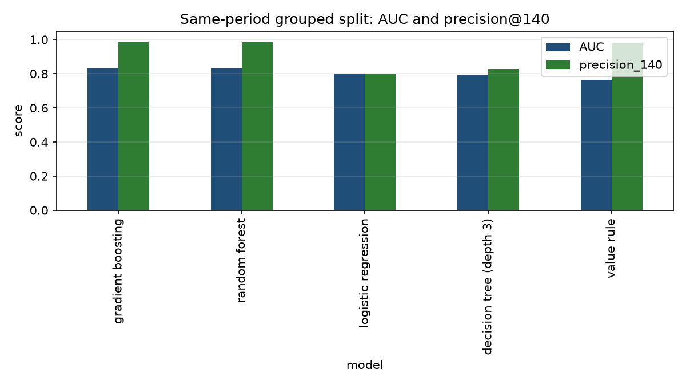
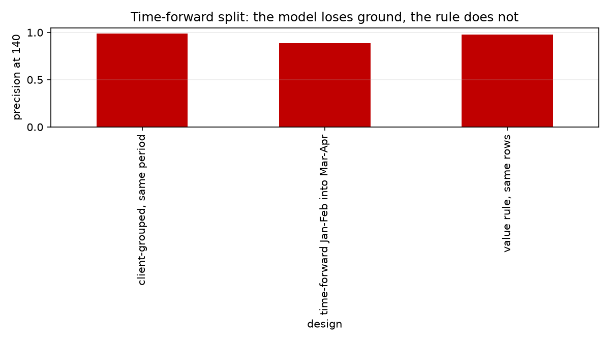
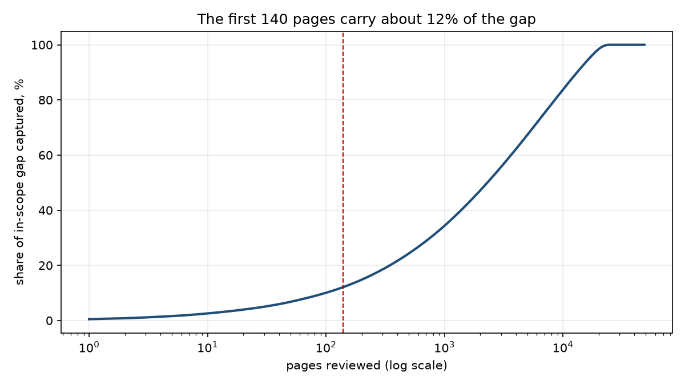

FlyRank ML Internship · Capstone Research Paper
A validated CTR opportunity queue for content review, built on 9.8 million rows of production search data.
With a portfolio of hundreds of thousands of pages and a 140-slot review budget, the question is which pages come first. Using 9.8 million daily rows from the FlyRank warehouse, this study builds March 2026 page-months and labels April CTR against position-tier peers. It compares a CTR-gap rule with four models on a client-grouped split, then repeats the test time-forward. The rule reaches precision@140 of 0.979, and the best model reaches 0.986 in-period but 0.886 time-forward. The result is a validated rule, a measured negative result for added model complexity, and a human-reviewed action playbook.
FlyRank's content operation covers a large pseudonymized portfolio. The review team can open only a fraction of it each month. That makes the work a queue problem, not a prediction problem. A team can look at roughly 140 pages over seven weeks. Every page it opens costs an editor's time, and every high-traffic page it skips keeps converting attention into clicks poorly. The question is which pages to open first.
The obvious rule is to sort by the lowest click-through rate. That rule fails in a measurable way. On a 30,000-page teaching slice, the 140 pages with the lowest CTR carried one click in total, because a page with zero clicks and a few thousand impressions always sorts first. A rule that weights the CTR gap by impressions captured about 21,300 clicks of expected gap with the same 140 slots. The two queues shared zero pages. The choice of rule is the decision.
This paper asks whether a learned model can improve on the best hand rule at that budget. It answers with a client-grouped split, a five-seed stability check, a time-forward split, and a leakage audit. The answer is useful even though it is negative for the model: at 140 reviews, the hand rule is the better queue, and the honest deliverable is a rule, a ranked action playbook, and a human review step.
The data is the FlyRank internship warehouse, build v20260703, a pseudonymized star
schema hosted on Hugging Face. All identifiers are salted hashes. No client names, domains, URLs,
or raw queries appear in this paper, the notebooks, or the repository.
| Table | Grain | Use in this study |
|---|---|---|
fact_content_daily_performance | report date × client × content | Features and labels |
dim_content | one row per content item | Content age, context |
dim_clients | one row per client | Coverage context only |
Features come from March 2026 (2026-03-01 to 2026-03-31). The label comes from April 2026 (2026-04-01 to 2026-04-30). The decision moment is April 1. June 2026 is the sealed final month and was never used for development.
Three things are excluded on purpose. GA4 engagement columns are excluded because
ga4_data_available IS TRUE on only 4.21% of March rows, and requiring them would keep
the clients with the cleanest analytics rather than the pages that matter. The query table
fact_content_query_90d is excluded because its 90-day window overlaps both the feature
and label months. Client and content IDs are context only, never features.
One row is one content page for one client in one calendar month, a page-month. The March partition holds 9,841,378 daily rows and rolls up to 331,437 page-months. The labeled cohort is 58,477 page-months across 31 clients.
| Feature | Definition | Knowable on April 1 because |
|---|---|---|
ctr_pct | March clicks divided by March impressions, times 100 | Both counters close on March 31 |
avg_pos | Impression-weighted mean March position | Every daily position is recorded in March |
march_impressions_log | log1p of March impressions | A closed total on March 31 |
position_sd | Standard deviation of daily March position | Computed from March days only |
content_age_days | Days from creation to 2026-03-31 | The creation date is fixed before March |
The label is a ranking proxy, not a revenue number. low_ctr_next is 1 when a page's
April CTR falls below the March CTR median of its own March position tier, for pages with at least
100 April impressions. The thresholds use March data only, so the rule is fixed on April 1. The
label base rate is 0.572.
The baseline is a transparent value rule:
max(0, tier_median_ctr - page_ctr) * impressions / 100. It estimates the clicks a page
would gain over 90 days if it reached its tier median. It has no fitted weights. It is readable,
and an editor can disagree with it.
Four models are compared: logistic regression, a depth-3 decision tree, a random forest, and gradient boosting. The simpler models are included so that complexity has to earn its place. The task is ranking, so every method is judged as a scorer at a fixed review budget.
The primary split is 70/30 grouped by client, seed 42, with zero client overlap. Pages from one client share templates and traffic patterns, so a random split would let the model learn the client instead of the pattern. The split is repeated with five seeds. A time-forward split trains on January 2026 into February 2026 and tests on March into April, which mimics deployment.
A label-derived column, April CTR, was added on purpose. It pushed AUC to 1.0000 and precision@140 to 1.0000, which is what a leak looks like. The column was removed and the honest number returned. The notebook also asserts that no April column enters the feature list, that no product flag is used, and that the one outcome-dependent population choice is disclosed: the 100-impression April floor drops 829 of 59,306 eligible pages (1.4%).
Same rows, same split, same metric. Precision@K is the metric that matches a fixed review budget. AUC is the ordering check, reported next to the base rate of 0.567.
| Model | AUC | Precision@140 |
|---|---|---|
| Gradient boosting | 0.8308 | 0.9857 |
| Random forest | 0.8304 | 0.9857 |
| Logistic regression | 0.8018 | 0.8000 |
| Decision tree, depth 3 | 0.7911 | 0.8286 |
| Value rule (baseline) | 0.7627 | 0.9786 |
Table 1. Client-grouped split, 31,246 test pages from 10 clients. Random precision@140 is 0.567.

Figure 1. The rule and the tree ensembles are close at precision@140. Logistic regression has a better AUC than the rule but a much worse queue, because a linear score cannot represent the position-tier interaction.
Gradient boosting edges the rule by one page out of 140. That is not a business result. Across five split seeds the model wins three, ties one, and loses one by four pages. The honest reading is a tie at this budget.
A model trained on January into February and tested on March into April drops to 0.886 precision@140, while the rule holds at 0.979 on the same rows. The same-period estimate was optimistic by about 14 slots.
| Design | AUC | Precision@140 |
|---|---|---|
| Model, client-grouped same period | 0.8308 | 0.9857 |
| Model, time-forward January into March | 0.7875 | 0.8857 |
| Value rule, same rows | 0.7627 | 0.9786 |
Table 2. Same test rows for all three rows. The rule is period-adaptive because it uses the current month's tier medians, so it does not degrade the way a frozen model does.

Figure 2. Under the deployment-like split, the model loses about 14 of the 140 slots and the rule stays at the top.
The model's top 140 contained two misses. Both were top-3 pages with a March CTR near zero (0.018% to 0.035%) whose April CTR recovered to 0.345% and 0.679%. The model read a large gap and expected it to persist. The month was the anomaly.
The more interesting errors are false negatives. One deep page had 12,359 impressions and a 0.55% March CTR that fell to 0.000 in April. It ranked 31,142 of 31,246. The label is tier-relative, so a page that was strong in absolute terms becomes a positive when it falls below a low tier median. That is a property of the label definition, not a model bug, and a zero April CTR can also be a tracking gap.
The playbook uses the validated rule, not the model. Three archetypes map to three actions, and the age of a page decides whether the action is a snippet edit or a refresh.
| Archetype | Reason code | Action | Top 140 |
|---|---|---|---|
| Near-zero CTR at volume | VERIFY_FIRST | Check tracking and query mix before any edit | 4 |
| Aged snippet gap, 270+ days | CTR_GAP_AGED | Refresh the page, then rewrite the snippet | 36 |
| Prime snippet gap | CTR_GAP_PRIME | Rewrite the title and meta description | 100 |
Table 3. The 140-slot queue for March 2026, after excluding deep pages and requiring 500 impressions and 20 days of search data.
The top 140 carries about 11,700 clicks of expected gap, 12.1% of the in-scope gap. At 1.5 hours per review, that is about 210 editor-hours, or 84 clicks of gap per review. Extending to 500 reviews adds about 11,800 clicks for 360 more reviews, about 33 per review. The first 140 are the better use of a small team's time.

Figure 3. The gap capture curve flattens quickly. The 140-slot budget is a defensible stopping point for a small team.
Everything is in the public repository: github.com/8-BitRhyon/flyrank-ml-internship. The notebooks are executed and committed.
Seeds are fixed at 42 and row order is sorted before every split. The metrics receipts are
capstone_metrics.json
and ml10_playbook_metrics.json.
To regenerate the paper artifacts, run work/notebooks/capstone.ipynb top to bottom
with a Hugging Face read token in the environment as HF_TOKEN. The notebook clones
nothing and reads the warehouse through DuckDB.
Built on the FlyRank ML Internship dataset: flyrank.ai. The warehouse is a pseudonymized, gated release. All identifiers in this work are hashed. No client names, domains, URLs, or private queries appear in this paper, its figures, or the repository.